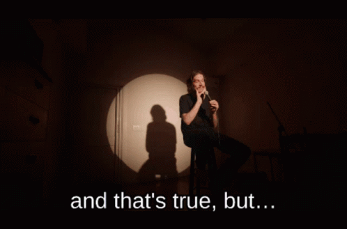

In their seminal work defining multimodality, The New London Group (1996) argues that literacy educators and students must see themselves as active participants in social change — learners who can be active designers and makers of social futures (64). They continue by suggesting that teachers and students are both inheritors of patterns and conventions of meaning and at the same time active designers of meaning (65). In essence, they urge readers to read and create multimodal pieces to understand traditional modes of communication and to fundamentally change how we communicate, thus changing cultural norms to be more inclusive of all voices. The New London Group introduces six modes through which meaning is made: linguistic, visual, audio, gestural, spatial, and how these five work together to create meaning (multimodality).

My work visualizing Bo Burnham's lyrics seeks to contribute to the modes with which we create meaning by reimagining what it means to communicate visually, incorporating elements from gestural and spatial. Much of my work stems from my own "felt sense."
Drawing on the work of American philosopher Eugene Gendlin, Peter Elbow (n.d) describes that felt sense points to an aspect of our experience that often accompanies us when we are involved in a creative act. Throughout the creation of this website, I've learned that I rely heavily upon my felt sense. I can feel when something is good/right/effective. I can also feel when something is off. This embodied experience is how I feel watching Inside. It's more than just a visual/aural experience. This comedy special moved me. It left (still leaves) me gut-punched, hollowed in the belly. I started this project because when I focused upon the captioning of "'Unpaid Intern' — Reaction Video," I didn't feel the same physical-ness. The captioning wasn't doing enough to convey Burnham's message/argument. Captions didn't capture the essence of the songs/snippets. As a person of sight and hearing, with a strong "felt sense" intuition, in my mind's eye I could "see" what the lyrics sounded like, and I could tell that my visualizations of said lyrics "felt right." So I sought to create or manifest visual representations that I thought best conveyed the feeling persons of hearing get when listening to the songs.